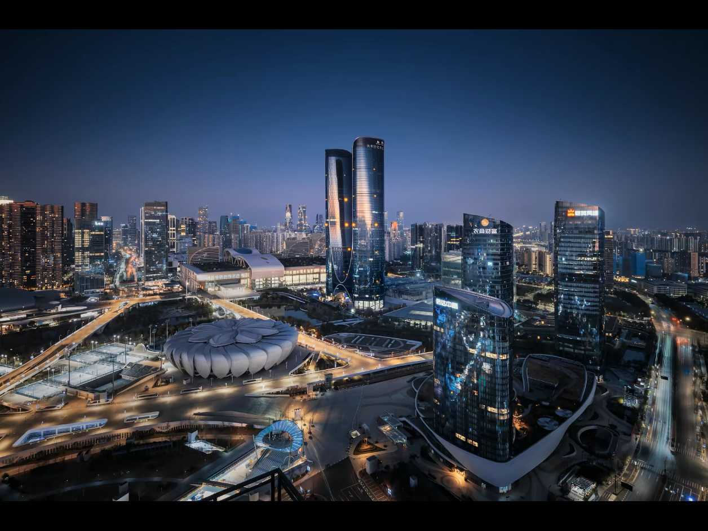

城市大脑驱动发展，江南古韵拥抱数字未来
三秋桂子，十里荷花；千年文脉，数智新生
西湖烟雨、京杭大运河、良渚玉琮，江南山水与千年文脉，滋养这座古城。
▪ 西湖山水，湖山共绘江南画卷
▪ 大运河贯通南北，千年漕运文脉
▪ 良渚古城，中华五千年文明实证
▪ 丝绸、龙井茶文化代代传承
▪ 满城桂香，江南水乡市井烟火
以城市大脑为核心底座，大数据感知城市，打造全国数字经济第一城。
▪ 城市大脑全域感知，一网观杭城
▪ 智慧交通，信号实时智能调优
▪ 西湖良渚数字文旅，客流智能预警
▪ 钱塘江潮大数据预测，安全防控
▪ 数字经济产业集群，科创蓬勃生长
大运河 · 连接千年古韵与数字时代

杭州在城市治理、交通、文旅、产业、医疗、教育落地数字化应用
杭州首创城市大脑，汇聚交通、水利、市容、文旅多源数据，一屏感知全城运行状态，实现事件自动发现、快速派单处置。
根据实时车流大数据动态调控信号灯，自动识别拥堵，缩短通行等待时间，这也是杭州城市大脑最经典的落地场景。
西湖、良渚、运河景区接入大数据，实时监测游客流量，客流超限自动预警，线上预约、智能导览，保护珍贵文化遗产。
杭州数字经济产业集群，依托云计算与大数据，孵化互联网、人工智能企业，打造全国数字经济高地。
打通省市医院数据，线上预约挂号、检查报告互通，实现跨院转诊，方便市民就医。
优质数字教育资源下沉，线上良渚文博课堂，让江南历史文化借助大数据走进校园。
杭州作为城市大脑的发源地，把大数据融入城市日常。智慧交通系统实时采集全城车流，动态调整红绿灯，缓解早晚高峰拥堵。钱塘江潮水依托水文监测数据，提前预测潮势，保障观潮人群安全。西湖、良渚、大运河等文旅景区，实时监控游客数量，当客流接近承载上限，及时预警分流，保护古迹也提升游览体验。浙里办政务平台，实现民生事项掌上办，市民足不出户就能办理社保、户籍等业务。医院之间的检查数据互通，减少重复拍片。线上数字博物馆把良渚玉琮、西湖古迹搬到线上，足不出户欣赏江南风光。大数据不是取代西湖烟雨、满城桂香，而是用数字技术守护这片湖山，让千年江南古城既有山水诗意，又有数字城市的便捷高效。